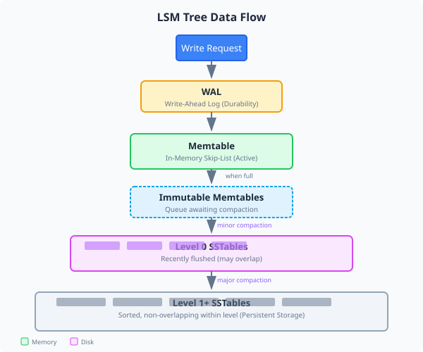

Memcached Protocol
Memcached protocol compatibility - drop-in replacement for your existing applications with full command support.
A fast, reliable key-value database built in Rust with full Memcached protocol compatibility. Drop-in replacement for your caching layer with data persistence.
Memcached protocol compatibility - drop-in replacement for your existing applications with full command support.
Persistent storage using SSTables ensures your data survives restarts with efficient on-disk format.
LSM tree architecture for performance with optimized write amplification and fast sequential reads.
Rust implementation for safety and speed with zero-cost abstractions and memory safety guarantees.
Async networking with Tokio runtime enables high concurrency and efficient I/O operations.
Multi-level compaction strategy optimizes storage efficiency and maintains consistent read performance.
MirDB uses the standard Memcached protocol. Use any Memcached client to interact with your data.
Store a key-value pair with optional TTL (time-to-live) in seconds.
set mykey 0 3600 11
Hello World
# Response:
STOREDSyntax: set <key> <flags> <ttl> <bytes>
Retrieve one or more values by their keys.
get mykey
# Response:
VALUE mykey 0 11
Hello World
ENDSyntax: get <key1> [<key2> ...]
Delete a key and its associated value from the store.
delete mykey
# Response:
DELETEDSyntax: delete <key> [noreply]
Use any standard Memcached client library to connect to MirDB.
from pymemcache.client import base
# Connect to MirDB (default port 12333)
client = base.Client(('localhost', 12333))
# Store a value
client.set('user:123', 'John Doe')
# Retrieve a value
name = client.get('user:123')
print(name) # b'John Doe'
# Delete a key
client.delete('user:123')MirDB uses an LSM (Log-Structured Merge) tree architecture for optimal write performance with efficient reads.

In-memory write buffer implemented as a skip list data structure. All writes go here first, providing O(log n) insert and lookup performance. The skip list maintains sorted order for efficient sequential access.
Sorted String Tables provide persistent storage on disk. Data is organized into blocks with prefix compression, checksums, and optional Snappy compression for space efficiency.
Background compaction merges and compacts data across levels. Minor compaction flushes memtables to Level 0, while major compaction merges SSTables between levels.
Every write is first appended to the WAL before being applied to the memtable. This ensures durability and enables crash recovery by replaying uncommitted writes.
Data appended to WAL, then inserted into memtable
Full memtable becomes immutable and flushes to Level 0
Background threads merge SSTables down through levels
Search memtable, then Level 0, then lower levels
Get started with MirDB in minutes. Choose your preferred installation method.
Clone the repository
git clone https://github.com/durbanlegend/mirdb.gitNavigate to the project directory
cd mirdbBuild the release binary
cargo build --releaseRun MirDB
./target/release/mirdbInstall directly from crates.io (when available)
cargo install mirdbOr install directly from GitHub
cargo install --git https://github.com/durbanlegend/mirdb.gitRun MirDB (binary added to PATH)
mirdbMirDB runs with sensible defaults out of the box:
| Setting | Default Value | Description |
|---|---|---|
| Port | 12333 |
The TCP port MirDB listens on (Memcached protocol) |
| Work Directory | /tmp/mirdb |
Directory for SSTable files and write-ahead log |
| Bind Address | 0.0.0.0 |
Network interface to bind to |
Track the implementation progress of MirDB features and upcoming enhancements.
Full Memcached protocol compatibility with support for GET, SET, DELETE, and other standard commands.
Log-Structured Merge tree implementation with memtable, SSTables, and multi-level compaction.
Durable persistence using SSTables and write-ahead logging for crash recovery.
High-performance async networking powered by Tokio for concurrent connections.
Background compaction process to optimize storage and maintain read performance.
Distributed consensus using Raft protocol for high availability and data replication across nodes.
Multi-node clustering for horizontal scaling and automatic failover capabilities.
Built-in metrics export for Prometheus and detailed performance monitoring dashboards.